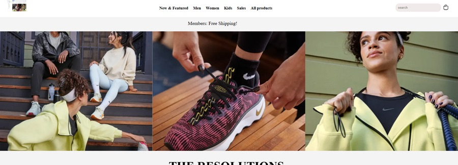
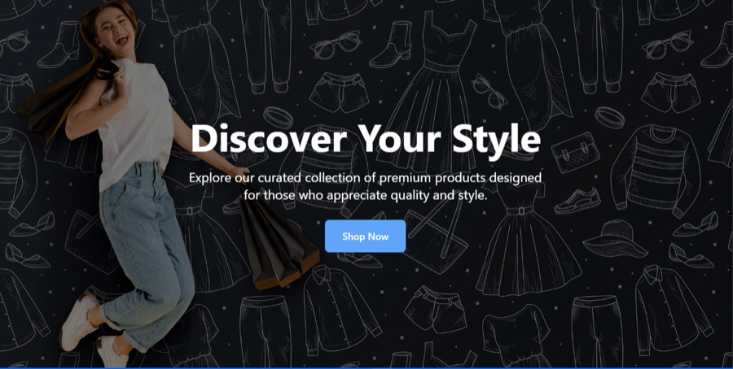
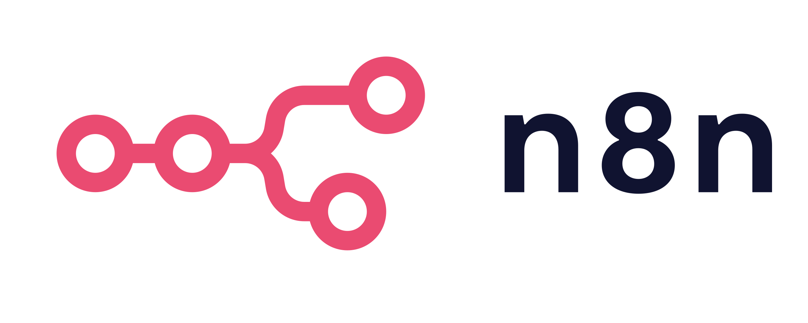

Shopify developer / AI automation engineer
I make Shopify stores faster, and the work behind them automatic.
Junior Software Engineer at HLTH, a UK wearables brand. I build the storefront, measure it with PageSpeed Insights, and wire up the n8n automations that keep orders, refunds and support moving.
Work at HLTH, 2026
-
1.6 s
Mobile product-page load in Google's 28-day field data, with zero layout shift. I measured with PageSpeed Insights and real-user data, then fixed what the data showed.
-
29 to 2
Review API calls per product-page build. The page was waiting 11.2 s on 29 sequential calls. Two parallel calls now load first, and the rest load on demand.
-
-47%
Home-page font data, and image data down 62%, by loading only what the visitor sees.
-
32
Country versions of a store rebuilt from a Shopify theme into a custom Next.js site on the Storefront API.
-
30+
n8n automations for late-order emails, address checks, refund logging, weekly supplier claims, and an AI candidate-screening system.
Projects
-

-

-

Experience
- Jan 2026 - now
- HLTH, Shopify DTC wearables. Moved from Automation Developer to Shopify Developer to Junior Software Engineer.
- Aug - Nov 2025
- FCI London, Automation Specialist. Monitoring and reporting workflows, plus the SOPs and training around them.
- Aug 2024 - Feb 2025
- City ICT Office, Software Developer Intern. Cut frontend load time 70% with an Inertia.js and React single-page app.
- 2021 - 2025
- City College of San Fernando Pampanga, BS Information Technology.
Tools
- Shopify
- Liquid, Online Store 2.0, Storefront API, Admin GraphQL API, webhooks, Appstle, Aftersell
- Frontend
- Next.js, React, TypeScript, Tailwind CSS, HTML, CSS
- Speed
- PageSpeed Insights, Lighthouse, Chrome UX Report, Core Web Vitals
- Automation
- n8n, Klaviyo, Commslayer, ClickUp, Supabase, PostHog, Google Tag Manager
- AI
- LLM agents, prompt design, structured outputs, OpenRouter, Claude Code